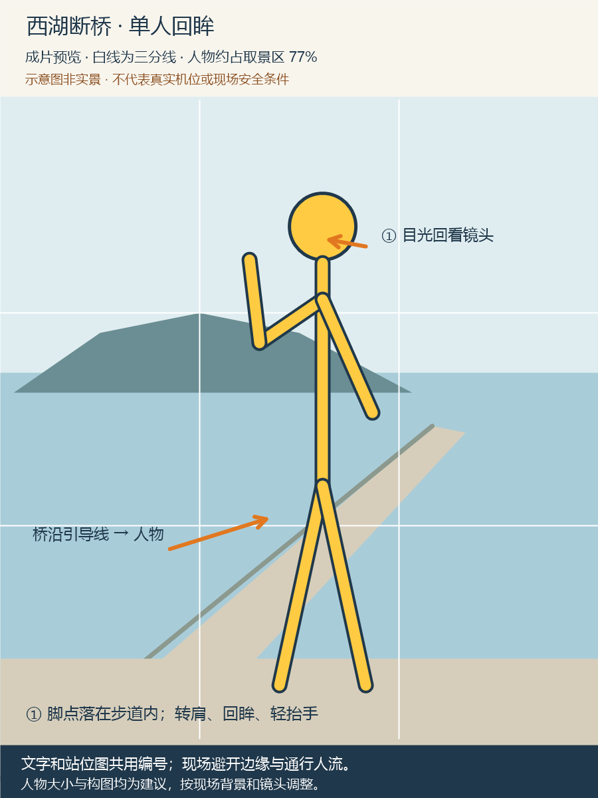
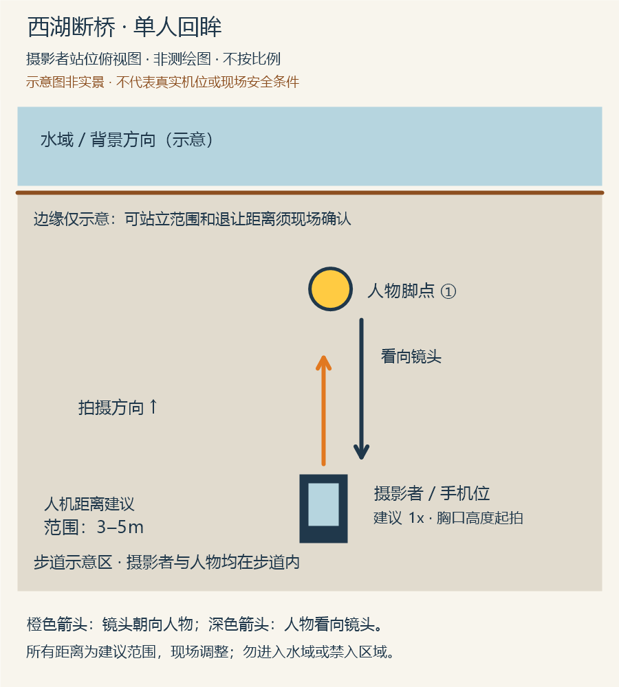

景点出片教练
每一站，都有你的好角度
西湖断桥 · 单人手机全身照
用户示例「朋友帮我拍，白天用手机，想要自然一点的全身照。」
抓行走瞬间，画面有动感。适合通行空间充足时。
先站稳再回眸，动作简单，方便朋友抓拍。
用户选择「选 B，教朋友怎么拍。」
主控将已确认的 B 方案和拍摄条件交给现场拍摄教练。
手机用 1× 主摄，从胸口高度试拍。人物侧身，先看侧前方，再慢慢回头。距离约 2.5–4 米为建议范围，按现场取景微调。
摄影者口令「先看远处。现在慢慢回头，看我。」


示意素材并非实景或实测。拍摄前请现场确认站位和通行条件，远离危险边缘。
用户示例「暂不选片，配一句自然轻松的文案。」
把脚步放轻，把西湖看久一点。